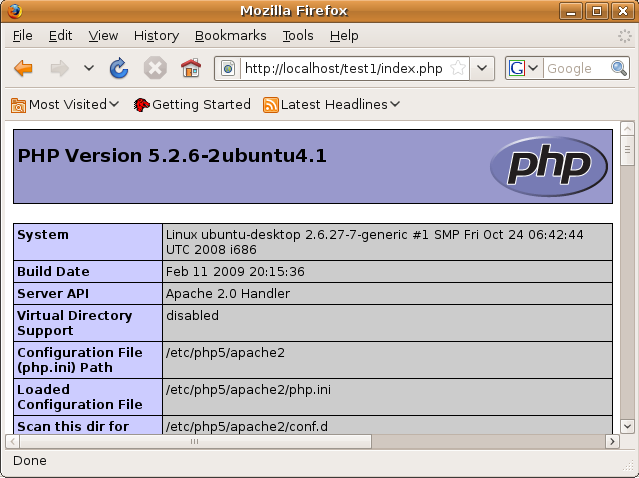
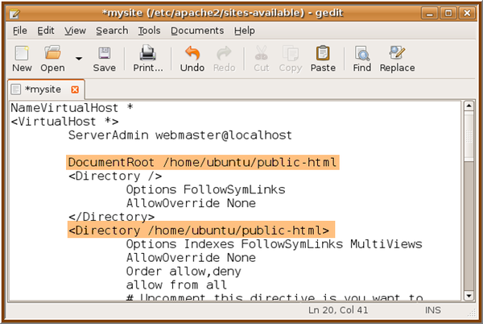

Configuring the PHP Development Environment in Linux Ubuntu
This tutorial shows how to configure the PHP development environment
in the Ubuntu operating system (7.10 and later). This involves
installing and configuring the PHP engine, a MySQL database, an Apache
web server, and the XDebug debugger.
As an alternative to configuring a PHP web stack on
your computer, you can set up a server-only OpenSolaris virtual machine
with a pre-configured PHP web stack and deploy your PHP applications to
this web stack over FTP. See Deploying PHP to a Server-only OpenSolaris Web Stack.
Typically, development and debugging is performed on a local
web server, while the production environment is located on a remote web server.
Setting up a remote web server is described in Deploying a PHP Application on a Remote Web Server Using the NetBeans
IDE. This tutorial has you set up a local web server. PHP support
can be added to
a number of local web servers (IIS, Xitami, and so on), but most commonly Apache HTTP Server is used.
Installing the Software
This tutorial shows how to configure the PHP development environment in Ubuntu 7.04 and later. You need to:
After you set up your PHP web stack, check that it is installed
correctly and that your Apache server recognizes your PHP engine.
To check that Apache and PHP are installed and running, open NetBeans IDE and create a PHP project. In the index.php file, enter the PHP method phpinfo(). Run the file. The standard PHP information page should display.

Specifying the Document Root for the Apache2 HTTP Server
The Document Root is the directory where the Apache HTTP server takes files for displaying
in the browser. The Document Root is specified in the file that defines your virtual host.
The default virtual host configuration file is
/etc/apache2/sites-available/default
with the document root
/var/www/
We recommend that you create your own virtual host and enable it instead of editing the default one.
Run the gedit application and edit the new configuration file (mysite) in it:
gksudo gedit /etc/apache2/sites-available/mysite
If asked, enter the password that you specified for the root user during the installation
of your operating system.
Change the Document Root to point to the new location:
/home/<user>/public_html/
Change the Directory directive, replace
<Directory /var/www/>
with
<Directory /home/user/public_html/>

Save the file mysite
Activating the New Virtual Host
To deactivate the default host and activate the new host, launch the Terminal and run the following two utilities in the Terminal window:
sudo a2dissite default && sudo a2ensite mysite
Restart the Apache HTTP server:
sudo /etc/init.d/apache2 reload
Configuring the MySQL Database Server
During the installation of the MySQL database server, a root user is created.
A dialog opens during installation in which you set a root user password. If
this dialog did not open, or you did not set a password in this dialog, you need
to create a MySQL root user password now.
You will need the password for creating other MySQL server users.
To connect to the MySQL server, launch the Terminal and in the Terminal window enter the following command:
mysql -u root -p
The MySQL command prompt appears.
At the command prompt enter the following command and press Enter:
SET PASSWORD FOR 'root'@'localhost' = PASSWORD('<yourpassword>');
If the command is executed successfully, the following message is displayed:
Query OK, 0 rows affected (0.00 sec)
Installing and Enabling the XDebug Debugger
The following steps are required only if you want to use XDebug,
which is optional for PHP development. XDebug is an extension to PHP.
NetBeans IDE uses it automatically when it is configured correctly for
your PHP web stack. For more information on XDebug and NetBeans IDE,
see Debugging PHP Source Code in the NetBeans IDE. Also see the NetBeans wiki page on XDebug.
Switch to the Installed panel to check that the make module is already installed.
Switch to the All tab and click the check boxes next to the following packages:
php5-dev
php-pear
For each item, from the context menu choose Mark for installation.
The Mark additional required changes dialog box opens with a list of dependent packages that
should be also installed to enable the work of the software. Click Mark.
The system returns to the Synaptic Package Manager panel where the selected packages are marked
for installation.
Choose Apply on the toolbar. The Apply the following changes summary panel opens with a list of
packages selected for installation. Click Apply.
When the download and installation are completed successfully, the Changes applied panel opens.
Click Close.
Note: You can also install the modules by running the following command in the Terminal window: aptitude install php5-dev php-pear
You can now download and install XDebug. Enter the following command in the Terminal window:
sudo pecl install xdebug
Enabling XDebug
To enable XDebug, you need to edit the php.ini file in the gedit text processor.
To start the gedit text processor, launch the Terminal and type the following command at the command prompt:
gksudo gedit
If asked, enter the password
specified for the root user during the installation of your operating system.
Check here for more details on configuring XDebug.
To send comments and suggestions, get support, and keep informed on the latest
developments on the NetBeans IDE PHP development features, join
the users@php.netbeans.org mailing list.